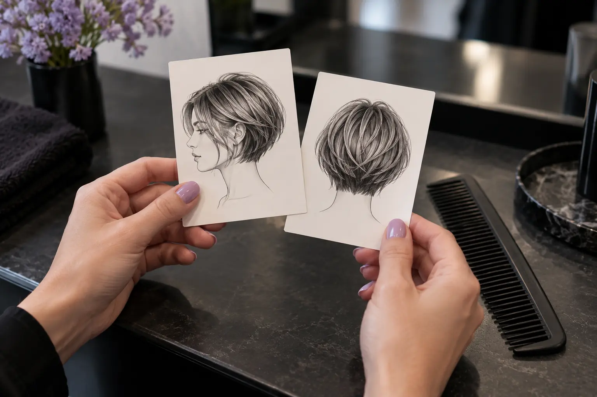

Kirpimo nuotrauka: kaip sutarti ilgį, kontūrą ir norimą pokytį?
Autorius: Madbeauty redakcija · Numatyta 2026 m. spalio 26 d. 10:00 (Lietuvos laiku)
Paverskite kirpimo nuotrauką aiškia užduotimi: išskirkite, kas patinka, pažymėkite ilgio ribas ir užpildykite pasiruošimo šabloną.

Kirpimo nuotrauka padeda parodyti norimą kryptį, bet viena pati tiksliai neapibrėžia, koks bus kirpimas ant jūsų plaukų. Prieš vizitą išskaidykite ją į konkrečius pasirinkimus: kas patinka, kokį ilgį norite išlaikyti, kokio kontūro siekiate ir kiek kasdienio formavimo jums priimtina.
Patogu pasiruošti su dviem vaizdais: norimo kirpimo pavyzdžiu ir dabartinių plaukų nuotrauka. Prie kiekvieno pasižymėkite, kas yra tikslas, o kas tik įkvėpimas.
Kas konkrečiai patinka nuotraukoje?
Vietoj „noriu tokio pat kirpimo“ įvardykite vieną ar du požymius. Tai gali būti bendra forma, prie veido paliktos ilgesnės sruogos, kirpčiukai, sluoksnių matomumas ar galų linija. Atskirai pasakykite, kas jums netinka, pavyzdžiui, trumpesnis pakaušis ar didelis pokytis priekyje.
Pažvelkite, kuri nuotraukos dalis iš tiesų parodo norimą elementą. Priekinis vaizdas gali gerai parodyti veidą įrėminančias sruogas, o šoninis ar galinis – kitą formos dalį. Jei norimam požymiui nuotraukoje nėra tinkamo kampo, pažymėkite jį kaip klausimą, o ne kaip jau aiškų nurodymą.
Pažymėkite ilgį priekyje, šonuose ir pakaušyje
Vien žodis „iki pečių“ gali palikti kelias skirtingas interpretacijas. Nurodykite orientyrą kiekvienai svarbiai vietai: pavyzdžiui, priekyje iki smakro ar raktikaulio, o šonuose ir pakaušyje – kokią formą norite išlaikyti. Tai yra jūsų pageidaujama galutinė riba, kurią dar reikia aptarti pagal dabartinį plaukų ilgį ir kirpimą.
Užpildykite šį trumpą šabloną ir parodykite jį kartu su nuotraukomis:
- Mano dabartinis kirpimas ir ilgis: ____________________.
- Nuotraukoje labiausiai patinka: ____________________.
- Priekyje norėčiau palikti arba pasiekti: ____________________.
- Šonuose ir pakaušyje norėčiau: ____________________.
- Svarbiausia ilgio riba, kurios nenoriu peržengti: ____________________.
- Kasdieniam formavimui galiu skirti: ____________________.
- Jei visko tiksliai suderinti nepavyks, pirmiausia noriu išsaugoti: ____________________.
Šis paskutinis punktas padeda atskirti būtiną pageidavimą nuo lankstaus. Jei svarbiausia išlaikyti ilgį, įvardykite tai aiškiai. Jei svarbiausia forma prie veido, pasakykite, kad dėl kitų vietų esate lankstesni.
Atskirkite kirpimą nuo nuotraukoje matomo sušukavimo
Pavyzdyje matomas vaizdas gali priklausyti ir nuo sušukavimo, o ne vien nuo kirpimo linijų. Pažymėkite, ar jums svarbi pati forma, ar ir toks užbaigimas, kokį matote nuotraukoje. Taip pat pasakykite, kaip paprastai nešiojate plaukus ir kiek laiko norite skirti jų formavimui.
Pavyzdinė užduotis: „Nuotraukoje patinka ilgesnės sruogos prie veido. Noriu išlaikyti ilgį ties raktikauliu, nenoriu kirpčiukų, o kasdien dažniausiai nešioju plaukus natūraliai. Jei šios detalės nesuderinamos, svarbiau išlaikyti ilgį.“ Tai tik užpildyto šablono pavyzdys, ne konkretaus kirpimo rezultato pažadas.
Jei renkatės iš kelių pavyzdžių, pažiūrėkite, kaip vertinti meistro darbų galeriją: įkvėpimo nuotrauka ir tikro atlikto darbo pavyzdys atlieka skirtingą vaidmenį.
Ką verta aptarti prieš pasirenkant galutinę formą?
Palyginę pavyzdį su savo dabartiniais plaukais, įvardykite, ką norite išsaugoti ir ką keisti. Nuotraukos rakursas ar sušukavimas gali neparodyti visų kirpimo detalių, todėl aptarkite neaiškias vietas prieš susitardami dėl konkretaus ilgio ar kontūro. Jei kyla abejonių, paprašykite paaiškinti, kuriuos jūsų pageidavimo elementus galima įvertinti iš turimų vaizdų, o ko iš jų nuspręsti negalima.
Peržiūrėti nacionalinį kirpimo pasirinkimą galite pasirinkę miestą. Katalogo pasirinkimas savaime nepatvirtina, kad konkrečiame mieste yra teikėjas ar laisvas laikas.
Planuojamos vidinės nuorodos
Šaltiniai peržiūrai
- Hair consultation: goals, reference pictures and maintenance — Read original consultation advice: discuss own goals, use reference pictures as dialogue starter, consider texture and maintenance. Brand educational material, not a review of our article or a result guarantee. Max 15 derived words per article, max 200 combined.
- Hairdressing technical handbook: up/down styles and reference photo angles — Read consultation/task distinctions plus pp24–28 lighting, all4 viewing angles and photo details. Only ordinary image interpretation and style categories; 2021 competition timings/rules never salon norms or current legal guidance.